Zennの「frontend」のフィード
フィード

【Part4】【No.017】useState入門：カウンターで学ぶstateと再レンダー ― 画面が動き出す最初の一歩
Zennの「frontend」のフィード
みなさん、こんにちは！ペンギンエンジニアです！前回016の次回予告で、「次回からPart 4、useStateで画面が動き出します。クリックで数字が増えるカウンターを作りながら、stateと再レンダーの仕組みを扱います」とお伝えしました。今日はその約束を回収する回です。016のまとめでは、「この画面は一度描いたら、それきりです。クリックしても、時間が経っても、何も変わりません」とも書きました。今日、画面が動き出します。先に種明かしをすると、普通の変数を書き換えても画面は変わりません。画面を変える入り口が、stateです。筆者はSES育成の場面で、「クリックしても画面が変わ...
1日前

初投稿とQ&Aサムネイルを状態モデルとして分解する
Zennの「frontend」のフィード
この記事の範囲公開ページで確認できる入力項目と説明から、初投稿用とQ&A用のサムネイルフローを設計メモとして分解する。内部API、モデル、生成品質、処理時間は確認していない。以下の型と図は実装の事実ではなく、レビュー可能な仮説である。 初投稿は「白紙を避ける」状態初投稿では、画像の加工より先に、動画の中心を選べることが重要になる。My First Video Thumbnail の公開フローは、初投稿向けの見た目を選び、短いアイデアや参考画像を加え、1280×720のカバーを生成する流れとして読める。type FirstUploadState = | { val...
2日前
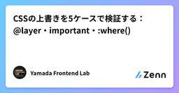
CSSの上書きを5ケースで検証する：@layer・important・:where()
Zennの「frontend」のフィード
セレクターを長くしたのに、CSSが上書きできない。@layerを導入したあとなら、詳細度より先にレイヤーの順序やレイヤー外の宣言を確認する必要があります。この記事では、色だけが競合する5ケースを作り、最終的なcolorを測定します。既存CSSをレイヤーへ移すときの確認手順も整理します。 再現デモと測定条件23ケースの再現デモのソースを保存してブラウザーで開くと、各ケースと実測表を確認できます。この記事で使うケース名は表に記載しています。2026年9月29日、Chromium（ユーザーエージェント上のバージョンはChrome 154）で確認しました。数値はCSS pxです。Saf...
2日前
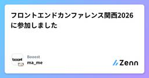
フロントエンドカンファレンス関西2026に参加しました
Zennの「frontend」のフィード
概要表題の通り、フロントエンドカンファレンス関西2026に参加しました。普段はバックエンドの領域を担当していることが多いですが、領域を超えて学べることが多く、大変有意義なイベントでした。https://2026.frontend-conf.osaka.jp/以下、拝聴したセッションの感想になります。 今さら理解するウェブフォント2026https://speakerdeck.com/takanorip/imasara-rikai-suru-ver-2026扱いが難しくて妥協することが多かったので、Webフォントの話を聞きにきました。どうしても重くなってしまうフォ...
2日前

作る→出す→見る→考える。よく言われることだけど、実際に回し続けるのは難しい
Zennの「frontend」のフィード
はじめにこんにちは、Gakken LEAPでフロントエンドエンジニアをしているkatashimaです。以前の記事では、https://zenn.dev/gakken_leap/articles/3e329c7d6e0fcbhttps://zenn.dev/gakken_leap/articles/2a4660a39b0a99エピックオーナーとして機能開発の上流から関わるようになり、「どう作るか」だけではなく「誰のために、なぜ作るのか」を考えるようになったことを書きました。その後はSEO対策周りやClarityにも触れ、作ったものを出して終わりにせず、実際にユーザーがどう動...
2日前
wrangler pages dev の --proxy が効かない罠
Zennの「frontend」のフィード
はじめにコードを直したはずなのに、挙動が変わらない。何度やり直しても同じ結果が返ってくる。そうなると、だいたい自分のコードを疑い始めます。自分の場合、犯人はコードではありませんでした。配信していた側が、ずっと古いビルド成果物を返していた、という話です。この記事は、Cloudflare Pages のローカル開発でそれを踏んだときの開発ログです。こんな人に向けて書いていますCloudflare Pages のローカル開発で wrangler pages dev --proxy を使っている人修正が反映されずに悩んでいて、どこから疑うかの手順を持っておきたい人この...
2日前
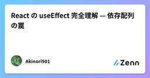
React の useEffect 完全理解 — 依存配列の罠
Zennの「frontend」のフィード
React の useEffect 完全理解 — 依存配列の罠 概要useEffect は React のフックの中でも最も使う機会が多く、そして最も誤解されやすいものです。特に「依存配列（第2引数）に何を書くか」で挙動が大きく変わり、初心者がハマる原因の大半はここに集中しています。この記事では、useEffect の基本的な考え方から、依存配列にまつわる代表的な罠、そしてその回避方法までを、動く最小コードとともに整理します。対象は「なんとなく useEffect を使っているが、依存配列の警告を消し方だけで対処している」レベルの方です。 環境React 18 以降（...
2日前
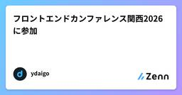
フロントエンドカンファレンス関西2026に参加
Zennの「frontend」のフィード
はじめに普段はバックエンドを担当していますが、フロントエンドにも前から興味があって「フロントエンドカンファレンス関西2026」に参加してきました。今どんな技術が使われているのかを知りたかったのと、フロントエンドエンジニアとお話したかったのが参加目的です。 概要開催日：2026/10/12（月・祝）会場：コングレスクエア グラングリーン大阪公式X：@fec_kansai公式サイト：https://2026.frontend-conf.osaka.jpfortee：https://fortee.jp/fec-kansai-2026ハッシュタグ：#fec_kans...
2日前
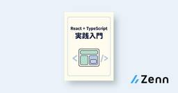
手を動かして学ぶ React + TypeScript 実践入門 ― Vite で作る型安全なモダンフロントエンド（SPA）
Zennの「frontend」のフィード
>「React で実際に動くWebアプリ（SPA）を、型安全に、実務レベルで作れるようになりたい」——本書は、ITパスポート程度のIT知識と HTML/CSS/JavaScript の基本はあるが React・TypeScript は初めて、という人を対象に、最初のコンポーネントから一貫して TypeScript で型を付けながら、JSX・props・状態管理（useState/useReducer/Context）・副作用（useEffect）・フォームとバリデーション・ルーティング（React Router）・非同期API連携・テスト（Vitest + Testing Library）・ビルドとデプロイまでを一気通貫で身につける教材です。動作確認用の Docker 環境（Vite + React + TypeScript）を同梱し、Windows・Mac のどちらでも同じ手順で学べます。最終的に、API と連携する実用的な SPA を一人で設計・実装・テストできる状態を目指します。>- JSX/TSX・関数コンポーネント・型注釈の基礎を読み書きできるようになる- props を型付きで設計し、再利用しやすいコンポーネントに分割できるようになる- useState・イベント処理・イミュータブルな状態更新を正しく扱えるようになる- リスト表示（map/key）と条件付きレンダリングをユニオン型で安全に書けるようになる- useEffect で副作用・データ取得・クリーンアップを適切に扱えるようになる- 制御コンポーネントでフォームを作り、入力検証と XSS 対策（サニタイズ）を実装できるようになる- Context と useReducer で状態を共有・集中管理できるようになる- React Router でページ遷移・動的ルート・型付き params を扱えるようになる- 非同期API連携・ローディング/エラー状態・カスタムフックを実装できるようになる- Vitest + React Testing Library でテストを書き、ESLint/Prettier・ビルド・静的ホスティングへのデプロイができるようになる
3日前
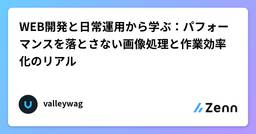
WEB開発と日常運用から学ぶ：パフォーマンスを落とさない画像処理と作業効率化のリアル
Zennの「frontend」のフィード
こんにちは！普段はWebプロダクトの運用やフロントエンド周りの改善、Webメディアの立ち上げに携わっているデベロッパーです。Zennコミュニティの皆さんは、日々表示速度のチューニングやUXの向上、日常の運用フローの効率化に励ましているかと思います。僕も普段の業務の中で「いかにサイトのパフォーマンス（表示速度）を保ちながら、魅力的なビジュアルコンテンツを効率よく作成・配置するか」という点によく頭を悩ませています。今回は、僕が日々のWeb開発・メディア運用で実践している「表示速度を損なわずに高品質なビジュアルを扱うTipsと作業フロー」について、実務ベースでお話ししてみようと思います。...
3日前
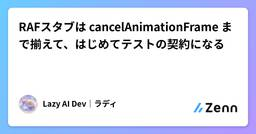
RAFスタブは cancelAnimationFrame まで揃えて、はじめてテストの契約になる
Zennの「frontend」のフィード
テストでは requestAnimationFrame（以下RAF）が本物のブラウザのようには動かないため、スタブに置き換えます。ところが、スタブが「呼べば動く」だけだと、止める処理（cancelAnimationFrame）が一度も試されないまま、テストが通ってしまうことがあります。筆者のゲームエンジン向けOSSのテストを読み返して、まさにその形を見つけました。確認した事実と、RAFスタブを「契約」として扱う考え方をまとめます。 結論RAFスタブは、request と cancel を対で差し替える返すIDは、整数にする（本物のRAFが返すのは符号なし整数のリクエストID）...
3日前
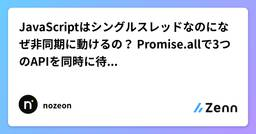
JavaScriptはシングルスレッドなのになぜ非同期に動けるの？ Promise.allで3つのAPIを同時に待てる理由
Zennの「frontend」のフィード
転職の面談で「JavaScriptがシングルスレッドとはどういうことですか」と聞かれて、答えられませんでした。それ以来、どう答えればよかったのかをずっと考えています。スレッドが1本しかないのに、なぜPromise.allは3つのAPIをまとめて待てるのか。そこを手元で測りながら理解しよう、というのがこの記事の趣旨です。 シングルスレッドなのに3つのAPIを同時に待てる JavaScriptのコードを実行するスレッドは1本スレッドとはプログラムの命令を1つずつ順に実行していく流れのことです。その流れが1本しかないことを、シングルスレッドと呼びます。MDN[1]の実行モデルの解...
3日前
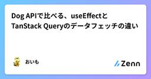
Dog APIで比べる、useEffectとTanStack Queryのデータフェッチの違い
Zennの「frontend」のフィード
はじめに初めてReactを学ぶ時にuseEffectでデータフェッチすることを紹介されることが多いと思うのですが、Reactの公式ドキュメントや他の方の記事を読んでみると、useEffectを使ったデータフェッチには注意点が多く、フレームワークに組み込まれているデータフェッチ機構やライブラリの仕組みを使うことが勧められていました。Reactの公式ドキュメントより引用フレームワークを使用している場合、組み込みのデータフェッチ機構を使用してください。モダンな React フレームワークには、効率的で上記の欠点がないデータフェッチ機構が統合されています。それ以外の場合は、クライア...
3日前
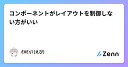
コンポーネントがレイアウトを制御しない方がいい
Zennの「frontend」のフィード
きっかけ自身のcol幅やflex-directionをpropsで制御しているコンポーネントがあり、非常に使いづらいと思ったため。// ここではTailwind CSSにしてますconst COL_SPAN = { 2: "col-span-2", 4: "col-span-4", 6: "col-span-6",};function Card({ colSpan = 2, children }) { return <div className={COL_SPAN[colSpan]}>{children}</div>;} 言い...
3日前
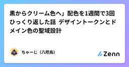
黒からクリーム色へ」配色を1週間で3回ひっくり返した話🎨 デザイントークンとドメイン色の聖域設計
Zennの「frontend」のフィード
画面の配色を、まるごと全部ひっくり返すこと3回。それでも、一度も変えなかった色が2つだけあります。日本株のAI銘柄スクリーニング＆継続学習端末「ALPHA FORGE（アルファフォージ）」を、Claude Code と二人三脚で個人開発しています。今回は【事件簿】回。といってもバグ障害ではなく、UIの配色を短期間に何度も全面的に作り変えたドタバタ劇と、それを手戻りなく爆速で回せたCSS設計のお話です🎨!【要約：この記事で伝えたいこと】黒と青の無骨な端末風で始まったUIは、焦げ茶と橙、明るいクリーム色、モックの全面適用と、わずか1週間で3回ひっくり返った🔄すべての色を1枚のCS...
4日前
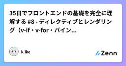
35日でフロントエンドの基礎を完全に理解する #8 - ディレクティブとレンダリング（v-if・v-for・バインディング）
Zennの「frontend」のフィード
この記事で学ぶこと#7 で、ref で作った状態が変わると画面が自動で付いてくる仕組み（リアクティビティ）を学びました。今回はその「画面側」です。テンプレートの中で、状態を属性に差し込む（v-bind）、条件で出し分ける（v-if / v-show）、配列の件数ぶん繰り返す（v-for）という書き方を扱います。この3つが読めれば、実務の Vue テンプレートの大半は読めます。迷ったら🔴だけ確実に（🔴 覚える、🟡 理屈、⚪ 流す）。!コードは #6 で作った Vue プロジェクトの App.vue に貼って動かせます。この記事に載せた「描画結果」はすべて、実際にマウントして D...
4日前
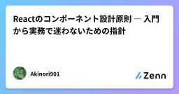
Reactのコンポーネント設計原則 ― 入門から実務で迷わないための指針
Zennの「frontend」のフィード
Reactのコンポーネント設計原則 概要Reactを書き始めると、まず動くものは作れます。しかしプロジェクトが育つにつれ「このコンポーネント、どこまで責務を持たせるべきか」「propsが増えすぎて扱いづらい」「状態をどこに置けばいいか分からない」といった悩みに必ずぶつかります。この記事は、React初学者から中級者への橋渡しを目的に、実務で迷わないためのコンポーネント設計原則を体系的に整理します。特定のライブラリやフレームワークに依存しない、普遍的な考え方を中心に扱います。 対象読者Reactの基本文法（JSX、props、state、useState/useEffe...
5日前
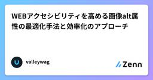
WEBアクセシビリティを高める画像alt属性の最適化手法と効率化のアプローチ
Zennの「frontend」のフィード
エンジニアやWeb制作に関わるみなさん、こんにちは！普段フロントエンドの実装やテックブログを書く際、画像の alt 属性（代替テキスト）ってどう設計していますか？「とりあえず画像の説明を入れておけばOKでしょ」「飾り画像だから空文字でいいや」と適当に済ませてしまうことも多いかもしれません。しかし、アクセシビリティの向上だけでなく、LLM（大規模言語モデル）や検索エンジンがページ構造を正確に理解する上でも、適切な alt テキストの設定は今や欠かせない要素となっています。今回は、成果に繋がる適切な alt 属性の書き方と、日々の運用負担を減らすための効率化テクニックについて解説します！...
5日前
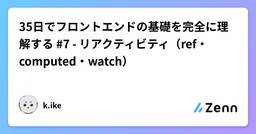
35日でフロントエンドの基礎を完全に理解する #7 - リアクティビティ（ref・computed・watch）
Zennの「frontend」のフィード
この記事で学ぶこと#6 で「状態を変えると画面が自動で更新される」のが Vue の核心だと言いました。今回はその仕組みの中心、リアクティビティ を正面から扱います。登場するのは ref・computed・watch の3つ。Vue のコードを読むなら避けて通れない、毎日使う道具です。迷ったら🔴だけ確実に（🔴 覚える、🟡 理屈、⚪ 流す）。!挙動は Vue プロジェクト（#6 で作ったもの）の中や、Node.js で vue を import して確かめられます。この記事の出力例はすべて実際に動かした結果です。 🔴 ref：変化が追跡される「リアクティブな値」ref ...
5日前
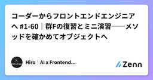
コーダーからフロントエンドエンジニアへ #1-60｜群Fの復習とミニ演習──メソッドを確かめてオブジェクトへ
Zennの「frontend」のフィード
はじめに群F「配列メソッド」は、今回で最終回です。#1-46 の forEach から前回の「使い分けの地図」まで、14記事にわたって配列メソッドを学んできました。map・filter・find・reduce・toSorted・flatMap と、道具の数はかなり増えました。ただ、ひとつひとつ理解できていても、「並べて出されると手が止まる」のが配列メソッドの難しいところです。そこで今回は、群Fの内容を5つのテーマに整理し直したうえで、ミニ演習8問で「本当に読めるようになったか」を確かめます。最後に、ここまで何気なく書いてきた p.name の p が何者なのかを取り上げて、群G...
5日前